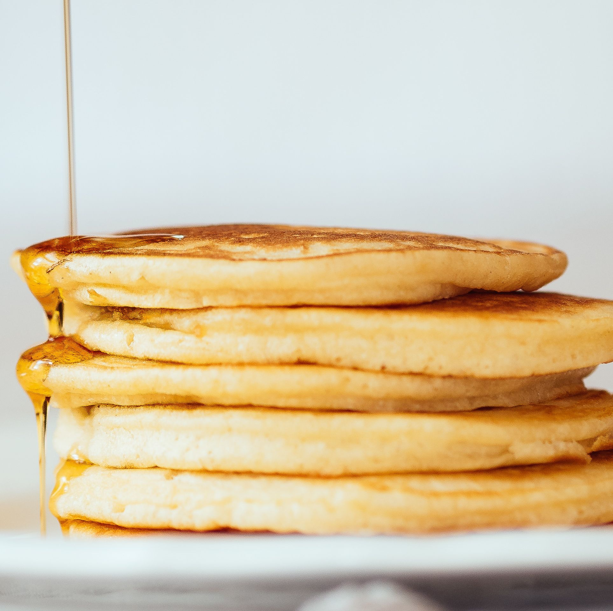

Mark's Pancake Recipe

Description:
Mark's pancakes are meant for those who want to bulk up on protein. He specifically revolves his recipe around the whey protein powder which he adds in as a part of the recipe.
He also loads them up with eggs to increase the amount of protein in which the pancakes contain. Overall, these pancakes are delicious. The recipe yields 1 massive pancake.
Ingredients:
Steps:
- Get a bowl
- Crack the eggs and put them in the bowl
- Pour the milk in the bowl and mix
- Pour in the flour, protein powder, and olive oil and mix
- Pour the final mixture into a pan allowing the pancake to be flat
- Cook the mixture in the pan for 2 minutes on each side, flipping every 2 minutes
- Done!